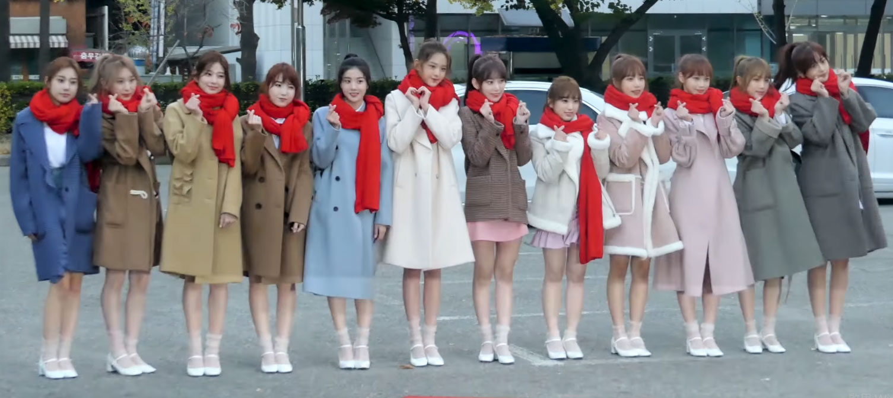

2018년10월29일 오후6시 음원공개 컬러버젼과 로즈버젼,키노 컬러와 로즈 총4가지 앨범 발매 역대 걸그룹 초동순위 9위(아이즈원위에 3그룹밖에없음) 역대 신인걸그룹 초동1위(앨범 발매량만 계산잘했으면 10만가능했음) 키노앨범 중고로 고가에 거래(단종됨) 음반명인 ‘COLOR*IZ’는 ‘색을 입히다’라는 뜻을 담고 있는 영단어 ‘Colorize’와 동일한 발음을 활용하였다. 타이틀 곡인 ‘La Vie en Rose’는 프랑스어로 ‘장밋빛 인생’이라는 뜻이다. ‘COLOR’와 ‘ROSE’의 두 가지 버전으로 발매되었다.대한민국 음원 차트에서는 벅스의 실시간 차트가 1위, 엠넷에서 6위, 지니는 8위, 멜론에서는 9위, 네이버 뮤직에서는 10위로 차트에 들어갔다.일본에서는 오리콘 종합 음반 주간 차트, 디지털 주간 차트에서 첫 등장으로 1위를 했다.
